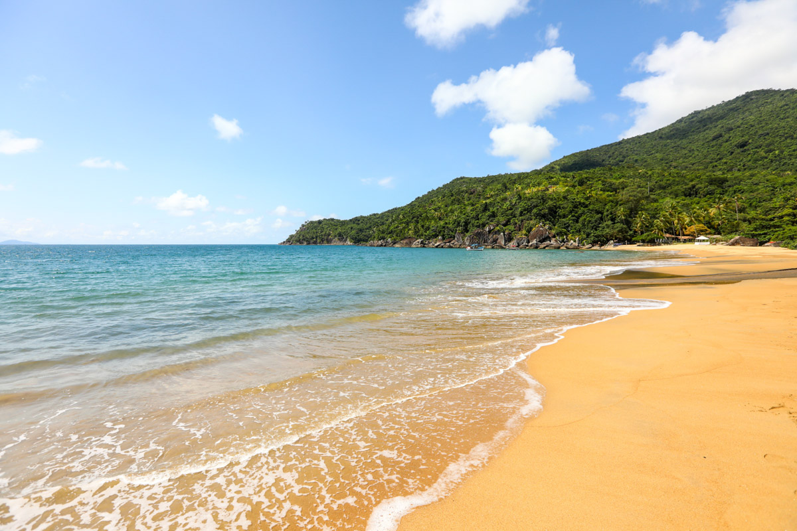
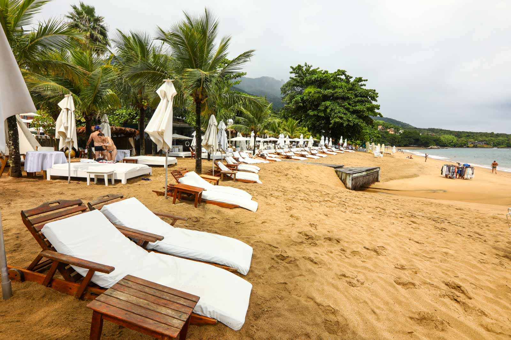
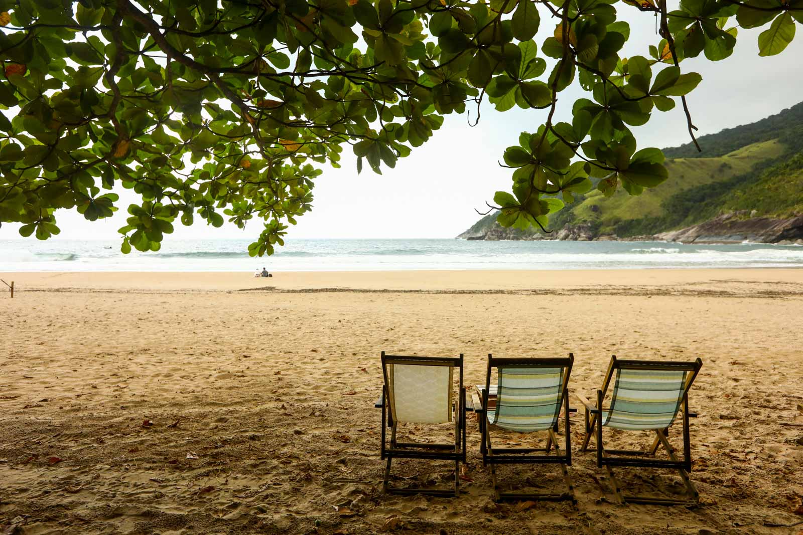
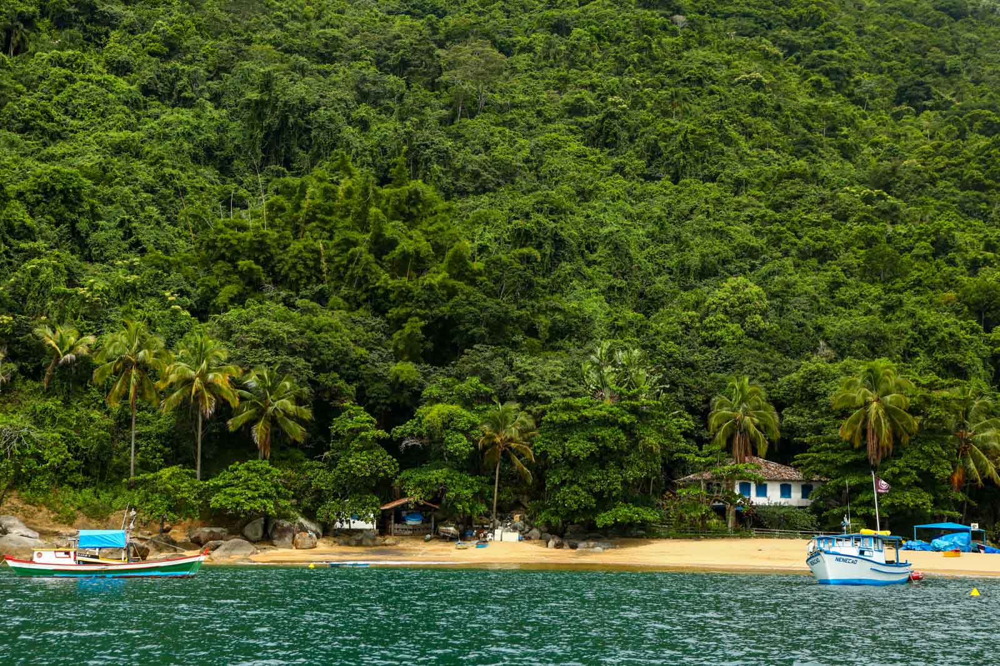

Praia do Jabaquara

A Praia do Jabaquara não só é uma das melhores praias de Ilhabela, como também é um das melhores praias do Brasil. Com jeito de selvagem, cercada por montanhas de intenso verde e com mar em lindos tons de azul, Jabaquara está entre as prediletas de quem busca um visual mais natural, mas não abre mão de bons serviços à beira-mar.
Como chegar
A Praia do Jabaquara está localizada no Norte de Ilhabela, depois da Praia da Pacuíba e distante 20 km da balsa. O acesso pode ser de barco, escuna ou de carro, pela estrada de terra que chega até a praia. Para estacionar, você poderá escolher entre parar na pista de terra ou descer até os restaurantes, onde há vagas à beira da praia. Não chegam ônibus até a Praia do Jabaquara.
Praia do Curral

A Praia do Curral é a queridinha de quem procura uma faixa de areia mais badalada entre as praias de Ilhabela. E ela agrada tanto pela boa oferta de serviços, quanto pelo belo visual! Na Praia do Curral, não faltam bons restaurantes, pousadas e hotéis, entre eles um dos mais luxuosos de Ilhabela, o DPNY Beach Hotel e Spa. A Praia do Curral é lugar para quem quer ver e ser visto, é a típica praia que atrai os turistas em busca de ambientes mais requintados.
Como Chegar
A Praia do Curral está localizada entre a Praia Grande e a Praia do Veloso, distante 8 km da balsa no Sul de Ilhabela. Há muita oferta de estacionamento nos arredores da praia, mas quase todos particulares e com cobrança pela vaga. Fique atento para não estacionar em local proibido. Os restaurantes da orla oferecem vagas para os clientes. Para quem não está de carro, linhas de ônibus passam na pista de frente para a Praia do Curral.
Praia do Bonete

A viagem é linda e rende um belo passeio ao redor da ilha, ou, no caso da trilha, uma caminhada maravilhosa em meio à mata. Bonete tem fama de ser uma das mais lindas praias de Ilhabela e o visual é mesmo especial. Cercada por montanhas cobertas de verde, Bonete conta ainda com um rio que desemboca no mar e dá ares bucólicos ao lugar. A praia é destino certo de quem curte cenários grandiosos e quase isolados.
Como chegar
O passeio de flexboat à Praia do Bonete começa às 11h e termina às 17h30, com saída e chegada da Praia do Perequê e da Praia da Vila. O custo médio é de R$ 240 por pessoa. Se quiser conhecer a Praia do Bonete, fique atento às agências que oferecem o roteiro para saber quando haverá a chance de ir até lá (nem sempre o passeio acontece devido às condições do mar).
Praia da Fome

O intenso verde das águas que cercam a Praia da Fome, em Ilhabela, é capaz de hipnotizar os apaixonados pelo mar. Difícil não se impressionar com o tom esmeralda que cerca o lugar. E o verde se espalha também pela vegetação, que dá ainda mais beleza à praia.
Como Chegar
A Praia da Fome está localizada na costa noroeste de Ilhabela, entre a Praia do Jabaquara e a Praia do Poço. O acesso é possível apenas por via marítima. A maneira mais fácil de ir até lá é contratando um passeio, que pode ser apenas até a Praia da Fome ou um tour completo, passando pelo Saco do Eustáquio e Praia de Castelhanos.